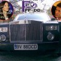
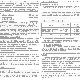

Continuăm serialul dedicat ofertei de nuri a partidelor (începută cu prezentarea femeii de miliARDe) şi trecem în revistă propunerea PP-DD pentru titlul de cea mai sexy femeie din politica românească.
Îngeri şi chibrituri
“Votaţi îngerii lui Dan Diaconescu” e mesajul care te izbeşte dacă accesezi site-ul Partidului Poporului. Urmează un afiş cu şi despre chibrituri, din care aflăm că ne-am ars cu “ceilalţi”, aşa că ar trebui să încercăm acelaşi lucru şi cu PPDD.
Aparent, făptura angelică a candidatei Maria Antonela Simion, prezentată de însuşi regele audienţelor drept Miss PP-DD, e imaginea perfectă a mesajului electoral destinat poporului OTV. Domnişoara zâmbeşte discret şi incitant ca o fetiţă cuminte (fără chibrituri), numai bună de votat pentru un fotoliu de senator în Colegiul Uninominal 3 din Braşov, unde-şi încântă alegătorii surâzând din fotografii . Atrăgătoarea Antonela Simion (35 de ani) are o declaraţie de avere mai goală decât frigiderele Fram şi un CV asemănător: e absolventă de Spiru Haret, specializată în Relaţii. Internaţionale, desigur. Oficial, cam asta e toată informaţia pe care frumoasa lui Diaconescu o pune la dispoziţia publicului.
Antonela Simion (PPDD), femeia fatală din Rolls-ul poporului
O documentare ceva mai amănunţită relevă faptul că eleganta Valeria Schelean şi diva partidului violet Antonela Simion par a avea traiectorii şi caracteristici asemănătoare: ambele sunt necăsătorite, ambele au copii, ambele arată superb şi etalează ţinute de lux, alese cu gust. Iar asemănările nu se opresc aici. Cum, în România, dedesubtul în spatele oricărei femei politice şade câte un sponsor generos bărbat de succes, biografiile celor două se mai intersectează o dată. Destinul Mariei Antonela Simion e indisolubil legat de Petrică Hogea, un controversat om de afaceri braşovean, condamnat în dosarul fraudării Bancorex şi BIR (Banca Internaţională a Religiilor) şi anchetat pentru înşelăciune în alte cauze, potrivit ziarului Curentul.
Teoretic, Petrică Hogea e patronul S.C. Duplex 91 SRL, societate care deţine hotelul Ramada Braşov din Săcele, zeci de spaţii comerciale, clădiri de birouri, hale, depozite, o tipografie şi cotidianul Bună Ziua Braşov (BZB). Practic, legăturile dintre Duplex91 şi Antonela Simion ar putea să nu se limiteze la relaţia cu Petrică Hogea. Din acest înscris aflăm că lupul Antonela şi Petrică adoră să fuzioneze prin absorbţie. Domnişoara de la PP-DD a venit cu propria firmă, L.P.T. Hotels S.R.L. şi a dizolvat-o în compania domnului Hogea, Duplex91. Rezultă o schimbare de acţionariat în societatea absorbantă şi un statut respectabil de patroană pentru fermecătoarea Antoanela Simion.
Subiectul conexiunilor dintre politic şi economic e extrem de încâlcit şi excede bugetul alocat acestui articol. Aşa că vă mai spunem doar că Petre Hogea e căsătorit, fiind finul fostului Ministru al Apărării Victor Babiuc (PD), dar şi al ex-deputatului PSD Vasile Bran. Natural, acum e finanţator al PP-DD. Puteţi citi mai multe pe această temă aici.
Maria-Antonela Simion, Miss fotogenie
Noi vă prezentăm senzaţionala ofertă a Partidului Poporului, cu care Dan Diaconescu speră să impresioneze partea virilă a electoratului. Intuim că nici bunicuţele nu vor rămâne imune la candoarea senzualei braşovence Antonela Simion. Iată galeria foto a candidatei sexy:


Rămâne un biet consilier local?
Dacă nu va cuceri inimile votanţilor, Miss PP-DD Antonela Maria Simion va rămâne în funcţia actuală, consilier local la Primăria oraşului ei natal, Braşov. Cum bănuiţi deja, Antonela Simion este Fecioară (adică s-a născut pe 9 septembrie 1977), iar printre pasiunile ei se numără maşinile de lux înmatriculate cu numere de tip BV-XX-DCD, duplexurile, cifra 91 şi sora ei mai tânără cu 10 ani, Bianca Simion. Splendida Antonela adoră videoclipurile care se încheie cu un cadru promiţător:
Presupunând că nu v-a tresăltat inima văzând domnişoara de la ARD, nici erotismul ingenuu al Antonelei Simion de la PPDD nu v-a dat palpitaţii, rămâne să vedem ce nuri aruncă USL în lupta pentru “România puternică”. Vestea bună pentru fanii serialului “cea mai sexy femeie candidat” e că respectiva domniţă are un colegiu eligibil. Aşadar, o veţi vedea nu doar pe ACRU.ro, ci şi în Parlament.
Antonela Simion rămâne la primăria Braşov
(actualizare)
Miss Partidul Poporului a ratat şansa de a deveni cea mai sexi parlamentară din Senatul României, clasându-se abia pe locul al treilea în colegiul uninominal 3. Antonela Maria Simion a sedus doar 8,12% dintre alegători, obţinând 4229 de cereri în căsătorie voturi. Procentajul frumoasei ardelence a fost sub scorul naţional al formaţiunii politice violet, rezultat care privează camera superioară a Legislativului de o binemeritată optimizare estetică.
Iar Petrică Hogea a trecut la PSD.


{kind=link}
{kind=link}
{kind=link}
{kind=link}
{kind=link}
{kind=link}
{kind=link}
{kind=link}
{kind=link}
{kind=link}
{kind=link}
{kind=link}
{kind=link}
{kind=link}
{kind=link}
{kind=link}
{kind=link}
Este atat de prefacuta ca …Zana surprizelor!
Antonela e mai sexi ca Scheleanca!
ati uitat sa mentionati ca pe langa rolls se afla un bmw seria 7, un ferrari f350, doua bentley, doua range rover. si nu stiu daca stiati dar angajatii de la ramada pe acte majoritatea lucreaza part-time adica 4 ore si au un salariu de 400 de lei iar diferenta pana pe la 1000-1300 o da pe sub mana, ceea ce inseamna, cred eu evaziune fiscala.
Brasoave
a invatat PR american, cu adresarea cu bratele deschise … )
)
da este fffff fotogena imi place e dintr-o zodie cu fetita mea mult succes pe viitor
Invideosul-e!!! Manci l-a rahat si nicimacar realizezii
Comments on this entry are closed.